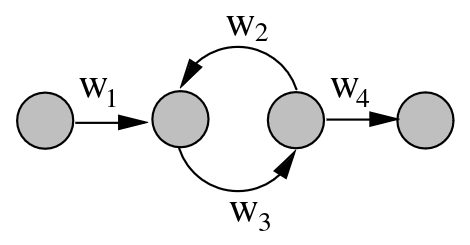
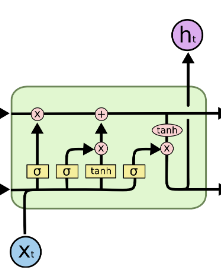

Recurrent neural networks
RNN are Neural networks that have inside loops to be able to take as input (fixed) sequences of values. 
The backpropagation step updates the weights as an avarage of the value obtained by the different gradient of the different iterations. The main problem with training RRNs is that, depending on the value of the weights, the gradient may explode or vanish.
Long-Short Term Memory LSTM
It is a type of RNN architecture that deals very well with keeping memory of old inputs of the sequence. 
- The upper line is called "C-line" and keeps long memory of past inputs.
- The first (from left) sigmoid layer is called "forget gate" and decide what part of memory to preserve, the function it computes is:
- The second sigmoid layer is called "input gate" and decide what part of the input to preserve,
- The tanh layer reates a vector of new candidate values to be added to the state,
Note: for a more in depth analysis of the topic, see Sequence processing with RNN